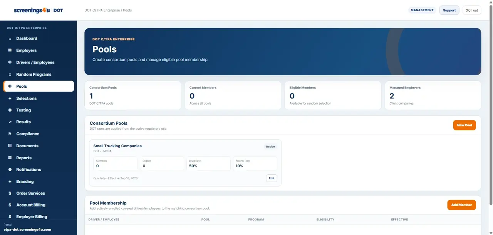

Designed for safety-sensitive CMV operations regulated by FMCSA.
FMCSA · 49 CFR Part 382
Run FMCSA drug and alcohol compliance from one connected workspace.
Manage CDL drivers, random testing programs, testing orders, results, compliance records, documents and reporting for safety-sensitive commercial motor vehicle operations.
49 CFR 382primary FMCSA drug & alcohol rule
50%2026 random drug testing rate
10%2026 random alcohol testing rate

FMCSA workflow
Built around the records and testing activity behind an FMCSA program.
Workforce DOT connects the covered driver roster, program participation, random pools, testing orders, results, compliance work and supporting records in one operating system.
FMCSA catalog support includes both drug and alcohol testing workflows.
FMCSA program data includes Clearinghouse-related operational workflows.
Supports direct employers and FMCSA owner-operator drivers.

Random testing
Keep driver eligibility, pools and selections connected.
Manage random program participation alongside the driver records and program context that support each selection.
- Random pool participation
- Driver eligibility context
- Random selection records
- Connected testing orders
Testing workflow
Move from required testing to order tracking without leaving the platform.
Create and manage DOT testing orders, preserve the program reason, and keep testing activity tied to the driver and compliance record.
- Pre-employment and random testing workflows
- Post-accident management
- Return-to-duty / follow-up tools on eligible plans
- Result summaries and sensitive result access where entitled


Records & reporting
Keep compliance records ready for operational review.
Standard reporting is available across current employer plans, with advanced reporting, audit history and broader operational controls available at higher plan levels.
- Documents and compliance records
- Standard operational reports
- Advanced reporting on Professional and Enterprise
- Audit history on Enterprise
Choose your FMCSA pathway
Employer or owner-operator driver.
Use the workflow that matches how your FMCSA program is administered.
Manage a regulated workforce.
For companies administering CDL drivers, random programs, testing activity, compliance records and reporting.
Explore EmployersManage your own Part 382 program.
For a single FMCSA-regulated owner-operator driver using a dedicated compliance workspace and random consortium workflow.
Explore Owner-Operator DriverFMCSA employer plans
Choose the operating depth your workforce needs.
Current marketed DOT Employer subscriptions are Essential, Professional and Enterprise.
Core driver records, post-accident, policy acknowledgments, random programs, testing orders, compliance, documents, reports and notifications.
View plan details →Adds driver qualification, team users, DER/supervisor tools, Action Center, training records, collection sites, sensitive results and advanced reporting.
View plan details →Adds bulk import, locations, integrations, branded email, white label, audit history and expanded operational scale.
View plan details →